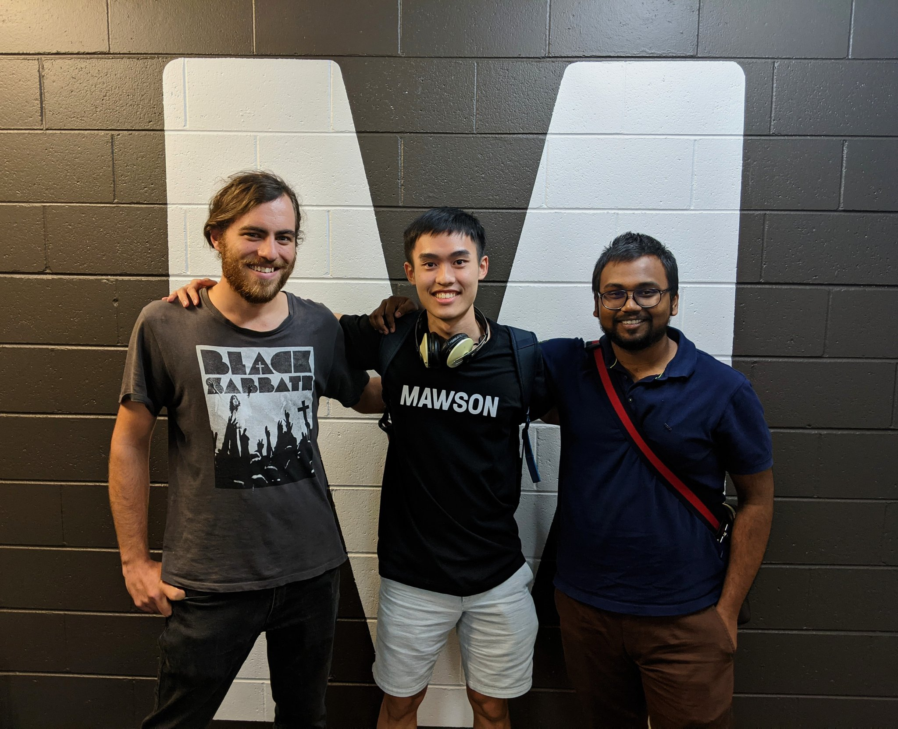

VAUX
- Type: Internship
- Stack: HTML, CSS, JavaScript, wavesurfer.js
- Live: View site
VAUX is a website for a startup in the deep learning audio compression space.
I revamped the markup and styles on their existing website and built a new technology demonstration to showcase their audio compression and denoising model.
It was built with HTML, CSS, JavaScript and the wavesurfer.js API.

Purpose and Goal
There were two phases to this project. The first was to create the technology demo and the second was to revamp their website.
The goal of the first phase was to make the technology demo easier to pitch to investors than their existing one, while the goal of the second phase was to give their website a more enterprise look and feel.
Spotlight
Building the technology demo audio player was by far the most challenging phase of this project. Particularly, making the code future-proof and easy to change.
It was crucial to make my frontend code as easy to change as possible, because new audio samples to showcase were being frequently produced by VAUX's ever-improving deep learning model.
To help solve this problem, I decided to generate all of the HTML that could potentially change (the containers for the waveforms, the toggle buttons for the different voices and audio samples and the bitrate stat bars) with JavaScript instead of hard-coding them.
Lessons Learned
A couple of key takeaways I got from this project were to: commit small changes more frequently to version control and to ask myself a set of data-oriented questions before writing a program.
Although I had learned about committing small, frequent changes to version control from university lectures and online, I'd never really made it a habit. That was until this project.
When the going was good, I kept adding changes to a feature that I had finally gotten to work but hadn't committed to GitHub.
But once I broke it, my trusty Ctrl-Z button let me down and I struggled to revert the changes.
I can safely say that my long-term relationship with Ctrl-Z is now over and that I am now committed to committing small, frequent changes.
Another lesson that I learned from this project was to think more deeply about the data required by my programs before writing them.
I spent a lot of time refactoring the demo and making changes to it that were completely avoidable in hindsight.
For example, it was only once I had started writing the logic for the audio player play/pause button, that I realized that I needed references to the wavesurfer instances that I had created in a preceding function — which I had not stored.
This meant that I had to go back and refactor the object that I used to store the other key bits of data for my program and other parts of my program that used it.
Now, before I write my programs I ask myself data-oriented questions like: "what kind of data is involved?", "how is the data represented?" and "how is the data used?"